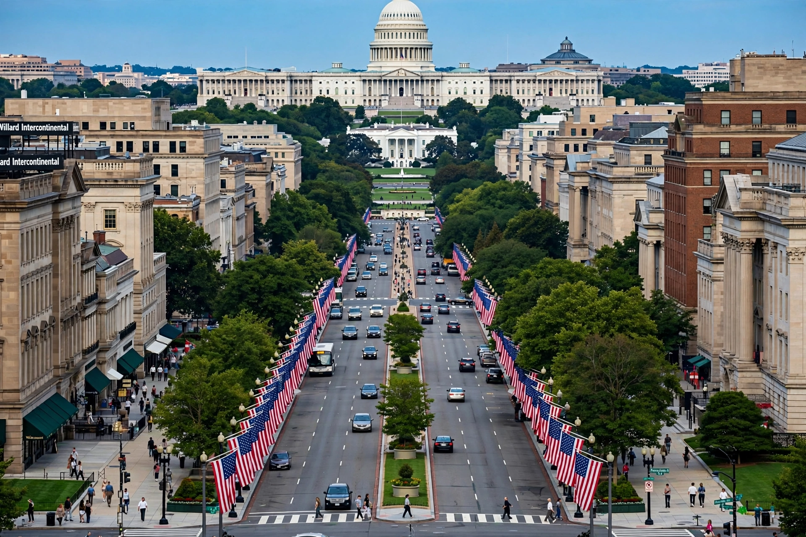

Pennsylvania Avenue is a major diagonal street in Washington, D.C., and Prince George's County, Maryland, best known for the stretch connecting the White House with the United States Capitol — often called "America's Main Street."

Laid out in Pierre L'Enfant's 1791 plan, the avenue was named for Pennsylvania. 1600 Pennsylvania Avenue is the White House address. The avenue hosts presidential inaugural parades, state funerals and protests. Its downtown stretch, redeveloped by the Pennsylvania Avenue Development Corporation from the 1970s, is a National Historic Site lined with federal buildings including the FBI headquarters, National Archives and Old Post Office.
The avenue runs southeast from Georgetown through downtown, across the Anacostia River as Pennsylvania Avenue SE, and into Maryland as MD Route 4 toward Upper Marlboro.